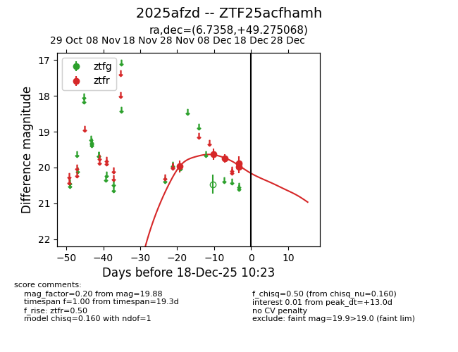
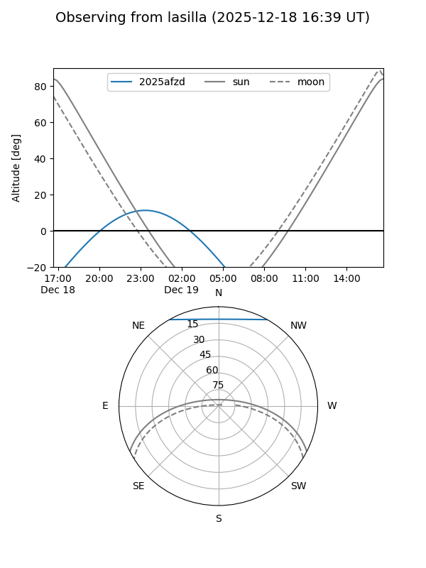
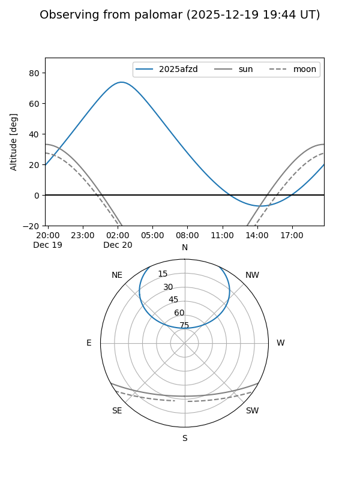

2025afzd
Target 2025afzd at 2025-12-18 11:17
Aliases and brokers:
FINK: fink-portal.org/ZTF25acfhamh
Lasair: lasair-ztf.lsst.ac.uk/objects/ZTF25acfhamh
ALeRCE: alerce.online/object/ZTF25acfhamh
TNS: wis-tns.org/object/2025afzd
YSE: ziggy.ucolick.org/yse/transient_detail/2025afzd
alt names
ZTF25acfhamh (ztf,fink_ztf)
2025afzd (tns,yse)
Coordinates:
equatorial (ra, dec) = 6.7358,+49.27507
equatorial (HMS+DMS) = 00:26:56.59,+49:16:30.25
galactic (l, b) = (118.8291,-13.40145)
Photometry
last ztfr=19.88
5 ztfr detections
Lightcurve

Visibility


Additional plots